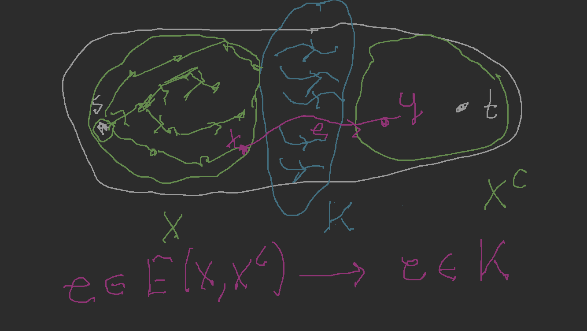
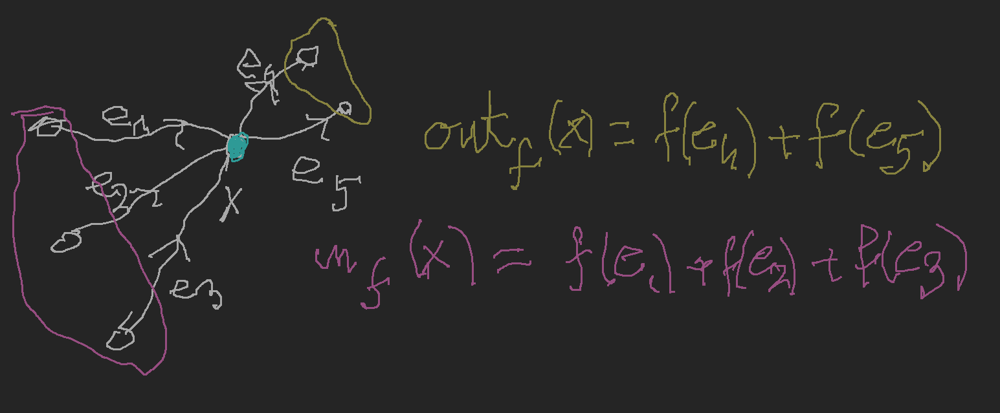
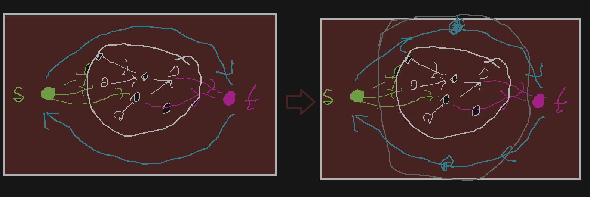
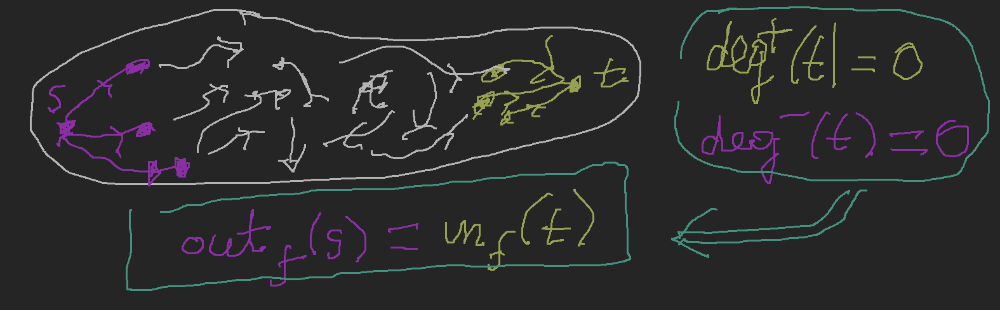
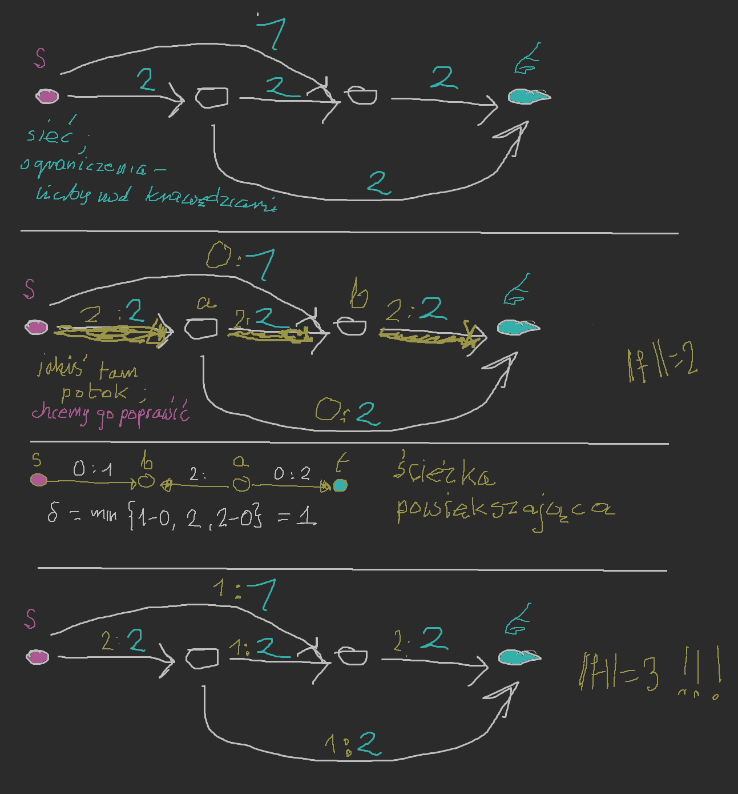

(A,B)–droga: ciąg x0,e1,x1,e2,…,en,xn takie, że x0∈A,xn∈B oraz ei jest krawędzią (skierowaną) od xi−1 do xi czyli tak samo jak dla grafów, z krawędziami zastąpionymi krawędziami skierowanymi
Podobnie definiujemy pojęcie (A,B)–łącznika wierzchołkowo rozłącznego, krawędziowo rozłącznego, (A,B)–separatora wierzchołkowego i separatora krawędziowego.
Podstawowe twierdzenie: maksymalna moc (A,B)–łącznika jest równa minimalnej mocy (A,B)–separatora
D-d: powtórzenie dowodu dla grafów (indukcja po ∣E∣)
Oznaczenie #1
Dla digrafu G=(V,E,φ) i X,Y⊆V zbiór krawędzi z X do Y oznaczamy przez E(X,Y), czyli: E(X,Y)={e∈E:fst(e)∈X∧snd(e)∈Y}.
Def Separator minimalny
Załóżmy, że G=(V,E,φ) jest digrafem, s,t∈V oraz, że zbiór krawędzi K jest ({s},{t})–separatorem. Wówczas istnieje zbiór X⊆V taki, że s∈X,t∈X∁=V∖X oraz E(X,X∁)⊆K.
D-d separator minimalny
Niech X={x∈V:jest droga od s do x w grafie G∖K}. Weźmy krawędź e taką, że fst(e)∈X oraz snd(e)∈X∁:

Wówczas e∈K, gdyż inaczej mielibyśmy y∈X. Zatem E(X,X∁)⊆K.
Oznaczenie #2
Niech (V,E) będzie grafem skierowanym i f:E→R. Niech X⊆V. Kładziemy outf(X)=∑{f(e):e∈E(X,X∁)} i inf(X)=∑{f(e):e∈E(X∁,X)}.
Dla uproszczenia notacji definiujemy również outf(x)=outf({x}) i inf(x)=inf({x}).

Def Pseudo-potok
Niech G=(V,E) będzie grafem skierowanym, s,t∈V i s=t. Funkcję f:E→R nazywamy pseudo-potokiem w (V,E,s,t) jeśli: (∀x∈V∖{s,t})(outf(x)=inf(x)).
Fakt #1
Niech f:E→R będzie pseudo-potokiem w (V,E,s,t) oraz X⊆V∖{s,t}. Wówczas: outf(X)=inf(X)
D-d Faktu #1
Zakładamy najpierw, że nie ma żadnych krawędzi od s do t ani od t do s.
Niech α(e)=∑x∈X([[fst(e)=x]]−[[snd(e)=x]]). Rozważmy dowolną krawędź e.
Jeśli fst(e)∈/X i snd(e)∈/X to α(e)=0.
Jeśli fst(e)∈X i snd(e)∈X to α(e)=0.
Jeśli fst(e)∈X i snd(e)∈/X to α(e)=1
Jeśli fst(e)∈/X i snd(e)∈X to α(e)=−1.
Zatem 0=outf(X)−inf(X).
Załóżmy teraz, że są jakieś krawędzie od s do t lub od t do s. Stosujemy następujący trick: 
Twierdzenie #1
Niech f:E→R będzie pseudo-potokiem w (V,E,s,t). Wówczas: outf(s)−inf(s)=−(outf(t)−inf(t)).
D-d Twierdzenia #1
Stosujemy poprzedni fakt do zbioru X=V∖{s,t}. Zauważamy, że outf(X)=inf(s)+inf(t) oraz inf(X)=outf(s)+outf(t).

Def Wartość f
Jeśli f jest pseudo-potokiem w (V,E,s,t) to liczbę outf(s)−inf(s) nazywamy wartością f i oznaczamy ją przez ∥f∥
Liczbę tę możemy interpretować jako produktywność źródła bądź jako konsumpcję ujścia. Równość z poprzedniego twierdzenia możemy interpretować tak: „ilość tego co wyprodukuje źródło jest równa ilości tego co pochłania ujście.
Def Sieć
Siecią nazywamy N=(V,E,s,t,c) taką, że (V,E) jest digrafem, s,t∈V, s=t oraz c:E→[0,∞)∪{∞}
Def Potok
Jeśli N=(V,E,s,t,c) jest siecią, to funkcję f:E→[0,∞] nazywamy potokiem w N jeśli f jest pseudo-potokiem w (V,E,s,t) oraz (∀e∈E)(0≤f(e)≤c(e)).
Zadanie optymalizacyjne, które będzie rozważane na dalszych wykładach: mamy daną sieć N. Chcemy znaleźć przepływ przez N o największej wartości.
Twierdzenie #2
Niech N będzie siecią (skończoną). Istnieje wtedy przepływ f∗wN taki, że: ∥f∗∥=sup{∥f∥:f jest potokiem w N}

Def Ścieżka powiększająca
Ścieżką powiększającą potoku f nazywamy ciąg x0e1x1e2…enxn taki, że x0=s,xn=t oraz dla każdego i=1,…,n mamy: (φ(ei)=(xi−1,xi)∧f(ei)<c(ei))∨(φ(ei)=(xi,xi−1)∧f(ei)>0). Zapasem takiego potoku nazywamy liczbę δ=min{δ1,…,δn} gdzie δi={c(ei)−f(ei)f(ei):φ(ei)=(xi−1,xi):φ(ei)=(xi,xi−1)
Fakt #2
Jeśli istnieje ścieżka powiększająca dla potoku f o zapasie δ>0, to istnieje potok f∗ taki, że ∥f∗∥=∥f∥+δ.
Obserwacja ta jest podstawą metody Forda-Fulkersona szukania potoków maksymalnych.